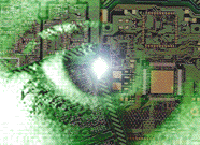
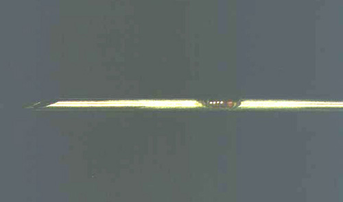
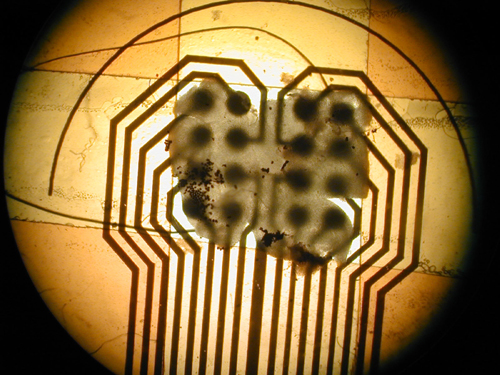
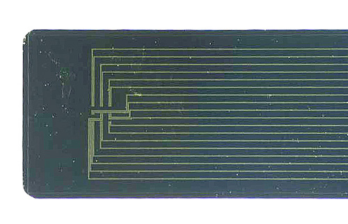
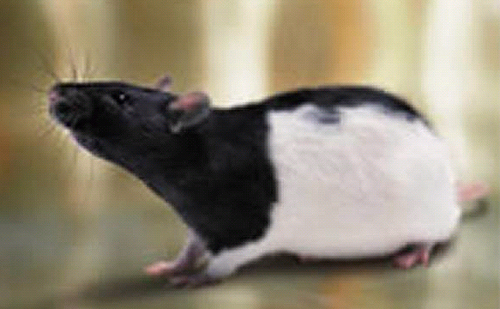
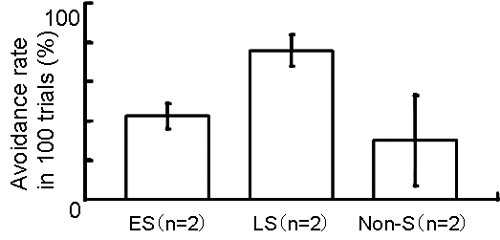

研究概要
神経インタフェース
|  |
人工眼プロジェクト
|
人工視覚 (人工眼, 人工網膜)とは失明した人の体内に埋め込んで視覚を再建する人工感覚器です。私たちは1995年以来、省庁や民間財団の支援のもとでプロジェクトを進め、日本における人工視覚研究を推進してきました。特に再生医学とMEMS（Micro-Electro Mechanical System）技術を融合したバイオハイブリッド型人工視覚は、諸外国に例を見ない日本独自の人工視覚として注目されています。なお2006年12月より日本科学未来館（東京、台場）にバイオハイブリッド型人工視覚のレプリカが常設展示されています。
人工視覚とは？
視覚神経への電気刺激によって失明者の視覚を再建する工学システムを総称して人工視覚（Visual prosthesis）といいます。研究グループによっては人工眼（Artificial vision）と呼んでいますが、どちらも同じものです。眼球や脳の視覚皮質へ電気刺激を行うと光を感じることが古くから知られているのですが（「電気的閃光（Electrical phosphene）」）、人工視覚はこの原理に基づいています。例えば、網膜や脳の視覚皮質のある1点を電気刺激すると一つの点が見え、複数箇所を刺激すると・｡数の・ﾌ点を見ることができるのです。したがって十分な刺激点があれば、電光掲示板のような低次レベルの形態視（物の形がわかる能力）を、そして将来はより高精細な視覚情報を再建できると考えられています。
生体の体内は電解質溶液で満たされているため、細胞の近くに電極を置けば細胞と電極が離れていても電気信号が細胞に伝わります。そこで現在は、電極を網膜や脳の神経細胞近傍に置いて神経細胞を電気刺激しています。しかしこの方法では細胞膜の外側から電気刺激するため、より多くのエネルギーが必要であることが問題で、人工視覚を実用化する際の最大の問題となっています。この問題を解決するために私たちの研究グループは再生医学とMEMS技術を融合した「バイオハイブリッド型人工視覚」の研究開発に取り組んでいます。
人工視覚は電気刺激する場所の違いにより、脳刺激型（Cortical implant）、視神経刺激型（Optic nerve implant）、網膜刺激型（Retinal implant）に分類できます（なお網膜刺激型は日本では人工網膜とも呼ばれています）。さらに私たちのグループが研究を進めているバイオハイブリッド型（Bio-hybrid implant）や、神経伝達物質で刺激する化学刺激型を加えると、5種類の人工視覚が各国で研究開発されています。
（詳細は以下の文献を参照）
- ブレイン-マシン・インタフェース最前線―脳と機械をむすぶ革新技術, 工業調査会, 2007.
- 視覚神経刺激による視覚機能代行－人工視覚（人工眼）, BME, 18, 4, 36-42, 2004.
- ハイブリッド型人工網膜, 応用物理, 73, 8, 1095-1100, 2004.
- 人工視覚（人工眼）, 現代医療の・ﾅ前線（後編）：人工臓器とメディカル･エンジニアリングの進歩, 42-51, 2003.
- 人工網膜による機能再建, 月刊眼科診療プラクティス, 91, 74-77, 2003.
- Retinal Prosthesis: An Encouraging First Decade with Major Challenges Ahead, Ophthalmology, 108, 1, 2001.
- 失明を治す人工の眼, 理研ニュース, 202 April, 1998.
| 脳刺激型 | ドーベル研究所（ポルトガル）、ユタ大学（米国）、イリノイ工科大学（米国）、Miguel Hernandez大学 (スペイン)、Ecole Polytechnique de Montreal（カナダ） | 糖尿病網膜症、緑内障、網膜色素変性、加齢性黄斑変性、外傷、視神経萎縮など大半の失明疾患 | |
| 視神経刺激型 | ルーベンカトリック大学（ベルギー） | 網膜色素変性、加齢性黄斑変性 | |
| 網膜刺激型 | 南カリフォルニア大学＆セカンドサイト社（米国）、 ハーバード大学＆マサチューセッツ工科大学（米国）、 オプトバイオニクス社（米国）、 ヒューストン大学（米国）、 ボン大学＆その他（ドイツ）、 インテリジェントインプランツ社（ドイツ）、 チュービンゲン大学＆その他（ドイツ）、 東北大学（日本）、 ニデック社＆その他（日本）、 岡山大学＆その他（日本）、 ニューキャッスル大学＆その他（オーストラリア）、 ソウル国立大学（韓国） | 網膜色素変性、加齢性黄斑変性 | |
| バイオハイブリッド型 | 東京工業大学＆理化学研究所（日本） | 大半の失明疾患 | |
| 化学刺激型 | ウェインステイト大学（米国）、スタンフォード大学（米国） | 大半の失明疾患 |
人工視覚研究の歴史
古文書に記載されている1755年のLeRoyによる実験は別として、1968年のBrindleyとLewinによる、専用刺激装置を脳内に完全埋植して電気刺激した実験が世界最初のものと思われます。以下の年表が示すように研究開発の歴史がもっとも長い脳刺激型人工視覚は、装置開発の技術的難易度が低く、かつボランティアの失明患者が参加した臨床実験も数多く実施されていることから、実用化が一番近いと期待されています。
| 1755年 | ヒト眼球への電気刺激 (LeRoy) |
| 1896年 | ヒト頭部への磁気刺激 (d’Arsonval) |
| 1953年 | 脳を電気刺激する人工視覚の特許 (Shaw) |
| 強膜・脈絡膜を電気刺激する人工視覚の特許 (Tassicker) | |
| 1968年 | ヒト視覚野への電気刺激 (Brindley ・ Lewin) |
| ヒト網膜への電気刺激 (Potts and Inoue) | |
| 1970年前半 | 脳を電気刺激する人工視覚の研究開発 (Dobelle, Schmidt) |
| 1988年 | Epi-網膜を電気刺激する人工視覚の研究開発 (Rizzo ・ Wyatt) |
| 1991年 | Sub-網膜を電気刺激する人工視覚の特許 (Chow ) |
| 剣山型電極アレイの開発（Normann） | |
| 1992年 | Epi-網膜を電気刺激する人工視覚の特許 (de Juan) |
| 1995年 | バイオハイブリッド型人工視覚の研究開発 （八木・内川・渡部） |
| ドイツの人工視覚開発国家プロジェクト | |
| 1998年 | 視神経を電気刺激する人工視覚の研究開発 （Veraart） |
| 2001年 | NEDOプロジェクト（八木・田野・太田） |
| 2004年 | Dobelle（脳刺激型人工視覚）没 |
日本の人工視覚研究
1995年以来、私たちは文部科学省や民間財団の大型プロジェクトのもとで、本邦初の人工視覚研究を推進してきました。2001年に網膜刺激型人工視覚の発明（特願2001-101484, PCT/JP2002/03027）を出願した後、その実用化を目指して研究組織の一部のメンバーは招聘を受けて民間企業へ研究の場を移し、経済産業省および新エネルギー・産業技術総合開発機構（NEDO）の国家プロジェクトとして、網膜刺激型人工視覚の研究開発を開始しました。そして2004年春には人工視覚システム１次試作機を完成させました。しかし依然として技術的に解決すべき問題が山積しています（人工視覚システム中間評価報告書）。
そこで現在は研究拠点を東京工業大学および理化学研究所へ移し、より高度な技術を導入して、多くの失明疾患（糖尿病性網膜症、緑内障、外傷、網膜色素変性，自己免疫網膜症、加齢黄斑変性）に適用可能であるバイオハイブリッド型人工視覚の研究開発を進めています。この人工視覚は、再生医学とMEMS（Micro-Electro Mechanical System）技術を融合した、諸外国に例を見ない日本独自の人工視覚として海外からも注目されています。
バイオテクノロジーとエレクトロニクス／メカニクスを融合したバイオハイブリッド技術は、人工視覚だけでなく他の人工感覚器や神経インタフェース、脳神経系機能の新しい測定技術、そして各種Bio-MEMSやバイオチップなどへも応用できると考えられ、21世紀の重要なテクノロジーになることでしょう。
プロジェクト沿革
| 1995年 | バイオハイブリッド型人工視覚の研究開発を開始 |
| 1996年 | 文部省科学研究費試験研究「培養細胞と半導体素子を用いたハイブリッド型人工網膜に関する研究」 |
| 1998年 | テルモ科学技術振興財団特定研究助成 |
| 「培養神経細胞と半導体デバイスを組み合わせた視覚代用臓器「ハイブリッド型人工網膜」の開発」 | |
| 2000年 | 文部科学省科学研究費基盤研究A「視覚代用臓器「ハイブリッド型人工眼」に関する研究」 |
| 2001年 | 網膜刺激型人工視覚の発明（特願2001-101484, PCT/JP2002/03027）を出願 |
| 新エネルギー・産業技術総合開発機構(NEDO)「人工視覚システム」 | |
| 2004年 | 人工視覚システム１次試作機完成 |
| バイオハイブリッド型人工視覚の研究開発を再開 |
バイオハイブリッド型人工眼の研究概要
バイオハイブリッド型人工眼は体内装置と体外装置から構成され、体内装置の電極上に神経細胞を付着させて体内に埋植します。中枢神経細胞は、シュワン細胞が存在する環境でその突起である軸索を再び伸ばすことができるので、バイオハイブリッド型人工眼ではこの点を利用します。つまり、体内装置と高次視覚中枢とをつなぐ「生きた信号ケーブル」として、神経細胞を用いるのです。このケーブルは末梢神経線維またはシュワン細胞を含んだ人工神経（培養シュワン細胞、細胞外基質および神経栄養因子を半透過膜性チューブに充填したもの）の中へ、電極上に付着させた神経細胞の軸索を誘導して形成し、他端は視覚中枢に接続します。視覚中枢において軸索の末端でシナプスが再形成されれば、電極から送られる電気信号に応じて神経細胞は中枢へ信号を伝達し、体内装置と高次中枢との機能的接続を実現できます。
バイオハイブリッド型人工眼
上：概念図、左下：電極上に培養された神経細胞、右下：再生した神経細胞の軸索と樹状突起
バイオハイブリッド型人工眼の利点は適用可能な疾患の多さにあります。例えば国内で最も患者数が多い糖尿病網膜症や緑内障による失明では、網膜神経節細胞が完全に変性するために、中枢への神経路が遮断されます。このような失明には網膜刺激型人工眼は適用できませんが、バイオハイブリッド型人工眼では失われた神経細胞を補うので、機能回復を期待できるのです。実現にはデバイスと移植神経細胞の間、移植神経細胞と宿主の神経組織の間において、安定した信号伝達を再構成する必要があります。そこで私たちは、導電性高分子を用いた神経刺激電極の開発、電極アレイ上での神経細胞培養とin vitro/in vivo軸索誘導、in vivo電気刺激における刺激パラメータの探索、人工眼の計算機シミュレーション、などの要素技術について研究を進めています。
人工眼ではMEMSと生体をつなぐ電極が重要な役割を果たしています。生体刺激用の電極は、埋植しても生体組織に悪影響を及ぼさない「生体適合性」と、電気刺激で生理活動を誘発させる「機能性」の２つの性質を満たす必要があります。これまで実用性・実現性の観点から、金、白金、イリジウム、TiNなど、生体適合性があり、かつ高い電荷注入能力を有する金属が電極材料に用いられてきました。私たちもこれらの金属を用いて、金属線を束ねて作製した電極アレイ、高分子フィルム上に形成した電極アレイ、シリコン基板上に形成した電極アレイ、などを作成してきました。
|  |  |  |
左から：白金線を束ねて作製した電極アレイ、高分子フィルム上に形成した電極アレイ、シリコン基板上に形成した電極アレイ
しかしいずれも電気的・化学的・機械的特性の面で問題があり、実用化のためにはそれらの問題を克服する必要があります。また従来の電極は金属材料で作製されているために電極の生体適合性が問題になりました。細胞外マトリクスの一つであるコラーゲンや細胞接着因子であるポリリジンといった生体適合性の高い化学物質で電極表面をコーティングし、この問題を解決することも可能です。しかし、これらの化学物質によるコーティングは、刺激に必要な閾値を増加させたり線維芽細胞などの増殖を誘発するため、機能性が低下する原因となります。したがって生体適合性と機能性を同時に改善する電極が求められています。
ところでポリピロール、ポリチオフェン、ポリアニリン等を代表とする導電性高分子は、プラスチックでありながら導電性を有するという特異な性質ゆえ、新しい機能性素材としての応用が期待され、種々の分野で実用化が進められています。導電性高分子は金属と比較しても高い生体適合性を有すると報告されており、医用生体工学の分野における新素材として期待されています。また分子設計が比較的容易であることから、生理活性物質や糖鎖など好みの性質を有した高分子を導電性高分子と結合させることで、細胞の膜タンパクや糖鎖に分子レベルで結合させて生体適合性や密着性を向上させたり、逆に線維芽細胞など特定の生体組織や生体分子を排除できる可能性を持っているのです。そこで私たちは、従来の金属の電極に代わって導電性高分子を電極材料とすることにより、高い生体適合性と機能性を持つ電極が作製できると考え、その・､究開発を行っています。
試作した導電性高分子電極（左）と神経細胞培養による生体適合性の評価実験（右）
軸索再生実験
ハイブリッド型人工眼では、MEMS上で神経細胞を培養し、その軸索を誘導します。これまでにも培養した神経細胞の軸索を誘導する様々な方法が研究されてきましたが、私たちはin vitro実験において神経細胞の生存や成長に影響を与える神経成長因子の濃度勾配を人工的に作り、軸索の伸長方向を制御するという「化学向性」を利用した方法を試みました。またin vivo実験では末梢神経線維を用いた神経細胞の軸索誘導の実験を行ってきました。
in vitro実験では、ゼラチンから作られたスポンジ（スポンゼル）に神経栄養因子を含ませてディッシュ上に置き、濃度勾配を作成します。成ラットの後根神経節（DRG）から採取した神経細胞をディッシュ上に置き、培養液を含んだコラーゲンで包埋し、ディッシュを温度37℃、5％CO2インキュベータの中に入れ、培養を行いました。
電極上に培養された神経細胞（神経突起の成長が観察できる）
一方、in vivo実験では、吸入麻酔した成ネコの視神経を切断し、その断端に座骨神経前枝を移植しました。そして移植神経の他端は外側膝状体（LGN）の中に埋入しました。移植約2ヶ月後に、移植神経の中に蛍光色素溶液を注入して、軸索が伸長した神経節細胞を逆行性に標識したところ、全ての網膜神経節細胞の5％弱が軸索を再生していることが判明しました。
再生した網膜神経性細胞
電気刺激実験
これまでに私たちは、ネコを用いた電気刺激のin vivo実験を実施し、電気刺激のパラメータと神経応答の関係について検討しました。実験では、麻酔下のネコのLGNに上記電極アレイを刺入し、パルスジェネレータで作成した電流パルスをLGNに与えた際の1次視覚野における誘発電位を記録しました。なお1次視覚野における神経応答を定量的に示すために、誘発電位の極大値と極小値の差を神経応答の大きさと定義しました。そして「パルス幅」「パルス強度」「刺激電極の正極と負極の距離」を変化させ、神経応答の大きさとの関係を記録しています。図は神経応答の大きさを色で示した実験結果のグラフです。図左から正負電極間距離dが100、200、300μｍの時の神経応答を示していて、縦軸はパルス強度、横軸はパルス幅を表しています。
電気刺激と神経応答の関係
動物行動実験
視覚系への電気刺激の影響を調べる人工眼の研究では、ヒトまたは動物を用いて実験が行われています。前者の場合には、電気刺激時に光を知覚しているかどうかは被験者に質問すればよいため、実験結果の確認が容易です。しかし様々な制約からヒトでの実験には困難が多く、数多くのデータが得られにくいのが現状です。一方、動物を用いる場合はヒトでの実験ほど多くの制約がないため、追試を数多く行うことができ、統計的にデータを処理しやすいです。しかし、電気刺激時に動物の視覚系神経が興奮していることが確認されても、本当に光が知覚されているかを判断することは電気生理的な実験データからでは困難です。そこで本研究では、床電気ショックを与えることができるシャトル箱を用いて、LGNを電気刺激した際のラット（ロングエバンス系、メス、8週齢、体重180～220g）の行動を評価する実験を行ないました。実験は、LGNへの電気刺激を条件刺激、床電気ショックを無条件刺激とした古典的条件付けです。何度も学習を繰り返すと、ラットは条件刺激直後に電気ショックを回避する行動を習得しました。
|

ラット（ロングエバンス系） |

回避率の比較（ES：電気刺激、LS：光刺激、Non-S：刺激なし） |
ラット視覚野における神経応答（左：光刺激、右：電気刺激）
人工眼によって再建される視覚のシミュレーション
人間の精緻な視覚機能を完全に代替することが人工眼研究の最終目標です。しかし当面の人工眼では電光掲示板のように暗い背景と多数の光点によって視覚情報が再現されるものと思われます。神経組織に接した個々の刺激電極に通電すると、電極近傍領域に存在する多数の細胞を同時に興奮させることができます。したがって一個の電極で刺激することは視野内に１画素分の視覚情報を提示することと等価であり、電光掲示板でいえば一個の光点を点灯することに相当します。また電極から離れた領域に位置する神経細胞は興奮することがありません。これは視野内には何も知覚されない暗い領域が存在することを意味します。したがって人工眼で再建される視覚は、暗い背景上に多数の光点で構成されると考えられます。図は人工眼で再建される視覚の計算機シミュレーション結果で、眼前に差し出された「手」の映像を示していまする。粗い画像ではあるが判別は可能で、動いているとさらに認識が容易になります。
電界分布シミュレーション
その他の計算機シミュレーション実験として、設計製作した電極アレイをモデル化し、通電したときの電極周辺にできる電界分布を、ポアソン方程式と有限要素法を用いて計算しました。下図の右は、電極周辺に形成される電界の大きさを色で示したグラフで、刺激・不関電極間距離が100μｍの場合を示しています。上段は電極をA-A'断面から眺めた場合の電界分布、下段は上方から眺めた場合の電界分布（長軸方向の半分の分布）を表示しています。容易に推測されるように、電極近傍で高い電界強度が観測されています。また図には示していませんが、正負電極間の距離を変更すると電界分布が大きく変化することが判明したことから、in vivo実験において記録される神経応答に大きな影響を与えることが予測されます。そこで今後はin vivo動物実験の結果と比較検討しながら、さらに計算機シミュレーション実験と解析を進め、高性能な電極アレイの設計指針を得たいと考えています。
電極周辺の電界分布シミュレーション
- 日刊工業新聞, THE研究室 神経細胞 電極で刺激 人工眼, 2011.4.28.
- 毎日新聞, 理系白書'09 挑戦のとき⑧, 2009.4.14.
- 日経BPムック「変革する大学」シリーズ 東京工業大学, 07-08年度版.
- 日経産業新聞, 2007.1.1.
- 日本科学未来館, 常設展示, 2006.12.20.から
- 日経産業新聞, 2006.5.25.
- サイエンスチャンネル, 「驚異！生物たちのスーパーセンサー」, 2006.4.6.
- NHK衛星第一, BSドキュメンタリー シリーズ「立花隆が探る”サイボーグ医療の時代”」, 2005.12.3.
- NHK総合テレビジョン（全国）, NHKスペシャル「サイボーグ技術が人類を変える」, 2005.11.5.
- バイオニクス, 失われた視力よ、よみがえれ-人工眼研究最前線, 2005年12月号, 2005.
- Ahmedabad Newsline, What you imagine is what you see, 2005.9.26.
- 日経バイオビジネス, 失明を救う人工眼の開発, 2004年12月号, 2004.
- 日経マイクロデバイス, 次のメシの種, 2004年1月1日号, 2004.
- 毎日新聞ユニバーサロン, ＜新春特別企画＞2010年、中途失明者に光が戻る－ここまで来た人工眼開発, 2003年12月31日, 2003.
- 週刊朝日, 21世紀の人工臓器, 2003年10月17日号, 2003.
- 日刊工業新聞, 24兆円の焦点「医療機器５：失明患者に光を」, 2003.5.16.
- 毎日新聞, 科学・いま＆未来「進む医療工学」, 2003.4.19.
- 日経ビジネス, 技術＆イノベーション「人工眼」, 2003年3月31日号, 110-112, 2003.
- 中部読売新聞（朝刊）, [改革の道]第3部:中部経済の再生を目指して（５）「すき間」開拓, 2002.8.3.
- 失明者の視力を補完－人工システム開発, 日本経済新聞, 2001年2月26日.
- 人工内耳の成功から人工眼へ生体とデジタルの融合を目指す神経インターフェース－Future Stream デジタル技術の最前線 , Engineer type, 2001.
- 失明治療に光を射す－ハイブリッド型人工網膜 , Nagoya発 , No.56 , 2001.
- 失明治療に光を射す－ハイブリッド型人工網膜 , Nagoya発 , No.56 , 2001.
- NHK総合テレビジョン（東海北陸７県）, ナビゲーション「よみがえる人体機能-最前線の医療工学-」, 2001.2.2.
- Japan sees the future through artificial eyes, Sunday-times, 2001年2月4日.
- Japanische Wissenschaftler sicher,dass sie das Wunder schaffen...und Blinde konnen wieder sehen, Bild(German Paper), 2001.
- 失われた視力を取り戻す－甦れニッポン、科学技術創造立国へ, 日本工業新聞, 2001年1月15日.
- 「人工眼」研究に着手, 毎日新聞, 2001年1月3日.
- 21世紀には、失った光が蘇る？人工眼研究の最前線, ターザン（マガジンハウス社発行）, No.342, 2001.
- 視覚障害者に大きな福音, みらい（ワオ・コーポレーション発行）, 冬号, 2000.
- 人工臓器の最前線, 読売新聞（夕刊）, 2000年6月20日.
- 失明者の視覚を再生する『人工眼』の研究開発, SCAT TECHNICAL JOURNAL NO.25 1999 AUTUMN.
- 人工眼－電極から脳神経へ信号を送る－, 21世紀を切り開く先端医療（ニュートンプレス発行）, pp.160-161, 1999.
- 失明を治す人工の眼, 理研ニュース, No.202 April, 1998.
- 生体に学ぶ技術－ハイブリッド型人工網膜－, 第137回科学技術展望懇談会資料（株式会社テクノバ発行）, 1998.
- 視覚代用臓器－ハイブリッド型人工網膜, Tes Magazine , Vol.49 , No.2 , 1998.
- Hybrid Artificial Retina, New Technology Japan (日本貿易振興会 (JETRO) 発行), Vol.25, No.8, November, 1997.
- Prototype artificial retina melds cells, semiconductor devices, Nikkei Weekly, 1997年9月22日.
- 注目を集める人工網膜研究, Chugai（中外製薬発行）, No.372, 1997年9月号
- 人工網膜：半導体と生体細胞を合体, 日経産業新聞, 1997年7月10日.
{kind=link}
{kind=link}
{kind=link}
{kind=link}
{kind=link}
{kind=link}
{kind=link}
{kind=link}
{kind=link}
解説論文
- 失われた視覚の再建を目指して‐人工視覚, Electrochemistry, 77, 9, 834-837, 2009.
- 人工視覚の課題と今後の研究開発, O plus E, 31, 3, 283-286, 2009.
- 神経インタフェース, 化学工学, 72, 9, 480-482, 2008.
- 人工視覚（人工眼）開発に向けてのMEMS技術, 未来材料, 8, 2, 64-66, 2008.
- 視覚の人工臓器：人工眼（人工視覚）, 設計工学 42, 3, 140-146, 2007.
- バイオハイブリッド型人工眼-生体とデバイスの融合, 画像ラボ, 18, 2, 7-10, 2007.
- 人工臓器としての人工視覚センサー：バイオハイブリッド型人工視覚の研究開発, 光アライアンス, 17, 11, 12-15, 2006.
- バイオハイブリッド型人工視覚の研究開発, 光アライアンス, 17, 11, 12-15, 2006.
- 人工眼, 細胞, 37, 2, 18-21、2005.
- 視覚神経刺激による視覚機能代行－人工眼（人工視覚）, BME, 18, 4, 36-42, 2004.
- 人工視覚研究の現状-工学的立場から, 脳21, 6, 4, 81-84, 2003.
- 失明を克服するテクノロジー：人工眼, 眼薬理, 17, 5-11, 2003.
- 人工網膜とその情報処理, 脳型コンピュータの実現に向けて：脳を知り、脳を創る, 78-83, 2003.
- 人工眼（人工視覚）, 現代医療の最前線（後編）：人工臓器とメディカル･エンジニアリングの進歩, 42-51, 2003.
- 人工網膜による機能再建, 月刊眼科診療プラクティス, 91, 74-77, 2003.
- 人工眼の開発：夢への挑戦, 画像ラボ, 13, 7, 32-35, 2002.
- 人工視覚（人工眼）, バイオマテリアル, 20, 4, 246-251, 2002.
- 人間の目（人工眼）, 映像情報メディア学会誌, 56, 3, 360-363, 2002.
- 失明者の眼を創る―急ピッチで進む人工眼の開発―, 光学, 31巻1号, 25-30, 2002.
- Rizzo, Wyatt, Humayun, Liu, Chow, Eckmiller, Zrenner, Yagi, Abrams, Retinal Prosthesis: An Encouraging First Decade with Major Challenges Ahead, Ophthalmology, 108, 1, 2001.
- 失明に光を―人工眼―, 日本機械学会誌, 104, 997, 18-19, 2001.
- 人工眼：ハイブリッド型人工網膜開発に挑戦, 9509, 薬事日報（平成13年10月1日）, 2001.
- 眼の再生医療：10年で失明者半減技術確立プラン、炎症･再生、21, 3, 171-184, 2001.
- 人工眼, Clinical Neuroscience 神経再生と機能修復, 18, 11, 1320-1322, 2000.
- 失明者の視覚を再生する『人工眼』の研究開発, Telecom Frontier, 25, 2-9, 1999.
- 人工眼研究の現状, 脳の科学, 21, 1349-1351, 1999.
- 八木 透, 内川嘉樹, 失明者の視覚を再生する「人工眼」の研究開発, Telecom Frontier, 25, 2-9, 1999.
- 人工眼－電極から脳神経へ信号を送る－, ニュートンムック：21世紀を切り開く先端医療, 160-161, 1999.
- 人工眼の開発状況, 神経眼科, 15, 2, 170-174, 1998.
- 人工網膜とその情報処理, Computer Today, 3, 84, 16-21,1998.
- 失明を治す人工の眼, 理研ニュース, 202 April, 1998.
- 視覚代用臓器：ハイブリッド型人工網膜, TES MAGAZINE（トヨタ自動車発行）, 49, 2, 70-75, 1997.
著書（分担を含む）
- 八木 透, 人工視覚, バイオ健康＆医療デバイス（三林浩二監修）, シーエムシー出版, 2009.
- 海外における人工視覚の研究状況, 技術情報レポート「光と医・食・農」, 財団法人光産業技術振興協会, 2008.
- ブレイン-マシン・インタフェース最前線, 工業調査会, ISBN978-4-7693-5134-4 C3004, 2007.
- 海外における人工視覚の研究状況, 光技術動向調査報告書XIX, 財団法人光産業技術振興協会, 2003.
- 失明者の視覚代用装置「人工眼」, マイクロマシン（江刺正喜監修), 産業技術サービスセンター, ISBN4-915957-38-1, 2002.
研究論文
- Yagi, T., Biohybrid Visual Prosthesis for Restoring Blindness, Int. J. of Applied Biomedical Engineering, 2, 1, 1-5, 2009.
- 八木 透, ハイブリッド型人工網膜, 応用物理, 73, 8, 1095-1100, 2004.
- 伊藤雄一郎, 大西保志, 木内一壽, 八木 透, 導電性高分子のマイクロパターン作製, 電気学会論文誌, 122-C, 9, pp.1441-1446, 2002.
- 寺澤靖雄, 八木 透, 仮想的に再現された人工眼視覚のもとでの読書能力の定量的評価, 電気学会論文誌, 122-C, 7, pp.1104-1109, 2002.
- Terasawa, Y., Yagi, T., Simulation of visual prosthesis in virtual space, International Journal of Applied Electromagnetics and Mechanics, 15, pp.431-436, 2001/2002.
- Kanda, H., Yagi, T., Watanabe, M., Uchikawa, Y., Effect of pulse parameters on visual nerve system, International Journal of Applied Electromagnetics and Mechanics, 14, pp.337-340, 2001/2002.
- Ito, Y., Yagi, T., Ohnishi, Y., Kiuchi, K., Uchikawa, Y., A study on conductive polymer electrodes for stimulating nervous system, International Journal of Applied Electromagnetics and Mechanics, 14, pp.347-352, 2001/2002.
- Kanda, H., Yagi, T., Ito, Y., Tanaka, S., Watanabe, M., Uchikawa, Y., Toward visual prosthesis: Electrical stimulation on the central nervous system, Non-Linear Electromagnetic Systems, pp.713-716, 2000.
- Kuno, Y., Yagi, T., Suzuki, S., Uchikawa, Y., System for Position Detection and Communication with Image Sensor, Non-Linear Electromagnetic Systems, pp.695-698, 2000.
- 内川嘉樹, 八木 透, ハイブリッド型人工網膜, 人工臓器, 27, 5, pp.703-707, 1998.
プロシーディングス
- Yagi, T., Watanabe, M.,Ohnishi, Y., Okuma, S., Mukai, T., Biohybrid retinal implant: Research and development update in 2005, Proceedings of 2005 IEEE the 2nd International Conference on Neural Engineering, 248-251, 2005.
- Yagi, T., Ito, Y., Kiuchi, K., Ohnishi, Y., Conductive Polymer Microelectrode Array, Proceedings of The Pacific Rim/ASME International Electronic Packaging (IPACK'01), pp.1-5, 2001.
- Kanda, H., Yagi, T., Nakatsu, T., Watanabe, M., Uchikawa, Y., A study on electrical simulation to visual nervous system in visual prosthesis, Proceedings of 2000 IEEE International Conference on Industrial Electronics, Control and Instrumentation (IECOM-2000), pp.108-113, 2000.
- Ito, Y., Yagi, T., Kanda, H., Ito, Y., Tanaka, S., Watanabe, M., Uchikawa, Y., A Study on culturing of neurons on micro-electrode array in hybrid retinal implant, Proc.6th Int'1. Conf. on Neural Information Processing(ICONIP'99), pp.381-385, 1999.
- Ito, Y., Yagi, T., Kanda, H., Tanaka, S., Watanabe, M., Uchikawa, Y., Cultures of neurons on a micro-electrode array and controls of their axon growth in Hybrid Retinal Implant, Proceedings of 1999 International Joint Conference on Neural Networks (IJCNN'99), 1999.
- Ito, Y., Yagi, T., Kanda, H., Tanaka, S., Watanabe, M., Uchikawa, Y., Cultures of neurons on micro-electrode array in hybrid retinal implant, Proceedings of 1999 IEEE Int. Conf. on Systems, Man and Cybernetics, IV, pp.414-417, 1999.
- Kanda, H., Yagi, T., Ito, Y., Tanaka, S., Watanabe, M., Uchikawa, Y., Efficient stimulation inducing neural activity in retinal implant, Proceedings of 1999 IEEE Int. Conf. on Systems, Man and Cybernetics, IV, pp.409-413, 1999.
- Tanaka, S., Yagi, T., Kanda, H., Ito, Y., Watanabe, M., Uchikawa, Y., Electric charge density distribution around stimulation electrode in retinal implant, Proceedings of 1999 IEEE Int. Conf. on Systems, Man and Cybernetics, IV, pp.386-389, 1999.
- Yagi, T., Ito, Y., Kanda, H., Tanaka, S., Watanabe, M., Uchikawa, Y., Hybrid retinal implant: Fusion of engineering and neuroscience, Proceedings of 1999 IEEE Int. Conf. on Systems, Man and Cybernetics, IV, pp.382-385, 1999.
- Yagi, T., Ito, N., Watanabe, M., Uchikawa, Y., A computational study on an electrode array in a hybrid retinal implant. Proceedings of 1998 IEEE International Joint Conf. on Neural Networks (IJCNN'98), pp.780-783, 1998.
- Ito, N., Shirahata, A., Yagi, T., Matsushima, T., Kawase, K., Watanabe, M., Uchikawa, Y., Development of artificial retina using cultured neural cells and photoelectric device: A study on electric current with membrane model, Proceedings of the 4th International Conf. on Neural Information Processing (ICONIP'97), pp.124-127, 1997.
国際学会発表
- Bio-hybrid retinal implant: Micro/Nano-fabrication of conductive polymer for molecular electrodes, Investigative Ophthalmology & Visual Science (IOVS), Ft.Lauderdale, FL, USA, 2005.5.1-5.
- Yagi, T., Biohybrid retinal implant research update 2005, Interdisciplinary Club for Biomaterials and Regenerative Medicine in Ophthalmology (ICBRO), Rockville, MD, USA, 2005.4.15. (invited talk)
- Yagi, T., Watanabe, M., Ohnishi, Y., Okuma, S., Mukai, T., Biohybrid retinal implant: Research and development update in 2005, Proceedings of 2005 IEEE the 2nd International Conference on Neural Engineering, Arlington, VA, USA, 2005.3.16-19.
- Yagi, T., The Challenge of Nidek Vision Institute, The Eye and The Chip 2002, Lowrence Technological University (MI, U.S.A.), 2002.6.8. (invited talk)
- Yagi, T., R&D on Visual Prosthesis, The 13th World Congress of International Society for Artificial Organs, Osaka International Convention Center (Osaka), 2001.11.5. (invited talk)
- Yagi, T., Development of Visual Prosthesis, The 7th International Micromachine Symposium, The Science Museum (Tokyo), 2001.10.31. (invited talk)
- Yagi, T., Challenge toward Visual Prosthesis, The 1st Asian Conference on Vision, Kanagawa, 2001.7.31. (invited talk)
- Yagi, T., Hybrid retinal implant: Visual prosthesis to restore vision in blind patients, Nano Bioelectronics & Systems Research Center Winter Workshop, Nano Bioelectronics & Systems Research Center, Seoul, Korea, 2001.2.5. (invited talk)
- Kanda, H., Yagi, T., Watanabe, M., Uchikawa, Y., Effect of pulse parameters on visual nerve system, Proceedings of The 10th International Symposium on Applied Electromagnetics and Mechanics, pp.405-406, 2001.
- Terasawa, Y., Yagi, T., Fujikado, T., Simulation of visual prosthesis in virtual space, Proceedings of The 10th International Symposium on Applied Electromagnetics and Mechanics, pp.707-708, 2001.
- Ito, Y., Yagi, T., Ohnishi, Y., Kiuchi, K., Uchikawa, Y., A Study on Conductive Polymer Electrodes for Stimulating Nervous System, Proceedings of The 10th International Symposium on Applied Electromagnetics and Mechanics, pp.409-410, 2001.
- Yagi, T., Ito, Y., Kiuchi, K., Ohnishi, Y., Conductive Polymer Microelectrode Array, The Pacific Rim/ASME International Electronic Packaging (IPACK'01), pp.1-5, 2001.
- Terasawa, Y., Yagi, T., Uchikawa, Y., Quantitative evaluation of reading ability using visual prosthesis-simulator, IOVS, 42(4), p.813, 2001.
- Yagi, T., Engineering meets neuroscience: A study on hybrid retinal implant, Eye and Design, Detroit, 2000.6.16. (invited talk)
- Yagi, T., Kanda, H., Watanabe, M., Uchikawa, Y., Effects of electrode configuration and pulse parameters in visual prosthesis, Investigative Ophthalmology & Visual Science (IOVS), 41, 4, p.102, 2000.
- Tanaka, S., Yagi, T., Suzuki, T., Uchikawa, Y., Thin film stimulation electrode array, Society for Neuroscience 30th Annual Meeting Abstracts, 26(2), 796.6, p.2123, 2000.
- Kanda, H., Yagi, T., Watanabe, M., Uchikawa, Y., Electrical stimulation for visual prosthesis, Society for Neuroscience 30th Annual Meeting Abstracts, 26(1), 498.13, p.1333, 2000.
- Ito, Y., Yagi, T., Ohnishi, Y., Kiuchi, K., Uchikawa, Y., A study on conductive polymer for electrical simulation device of cultured neuron, Society for Neuroscience 30th Annual Meeting Abstracts, 26(2), 796.5, p.2123, 2000.
- Kanda, H., Yagi, T., Nakatsu, T., Watanabe, M., Uchikawa, Y., A study on electrical simulation to visual nervous system in visual prosthesis, Proceedings of 2000 IEEE International Conference on Industrial Electronics, Control and Instrumentation (IECOM-2000), pp.108-113, 2000.
- Yagi, T., Hybrid retinal prosthesis - artificial retina, XIVth National Symposium - Ophthalmology 2020's (20/20) Scientific Predictions, Guess Work and Wild Imagination, Armedabad, India, 1999.9.22. (invited talk)
- Kuno, Y., Yagi, T., Suzuki, S., Uchikawa, Y., System for Position Detection and Communication with Image Sensor, International Symposium on Non-Linear Electromagnetic Systems (ISEM'99), p.216, 1999.
- Kanda, H., Yagi, T., Ito, Y., Tanaka, S., Uchikawa, Y., Toward visual prosthesis: Electrical Stimulation on the central nervous system, Proceedings of 1999 Int. Sympo. on Non-Linear Electromagnetic Systems (ISEM '99), p.167, 1999.
- Tanaka, S., Yagi, T., Kanda, H., Ito, Y., Watanabe, M., Uchikawa, Y., The analysis of stimulation electrode array in hybrid retinal implant, Investigative Ophthalmology & Visual Science (IOVS), 40, 4, p.734, 1999.
- Ito, Y., Yagi, T., Kanda, H., Tanaka, S., Watanabe, M., Uchikawa, Y., A culture of neurons on a micro-electrode array in hybrid retinal implant, Investigative Ophthalmology & Visual Science (IOVS), 40, 4, p.734, 1999.
- Yagi, T., Ito, Y., Kanda, H., Tanaka, S., Watanabe, M., Uchikawa, Y., A prototype of a micro-electrode array for hybrid retinal implant, Investigative Ophthalmology & Visual Science (IOVS), 40, 4, p.732, 1999.
- Tanaka, S., Yagi, T., Kanda, H., Ito, Y., Watanabe, M., Uchikawa, Y., The electric density distribution around a stimulation electrode array in hybrid retinal implant, Abstracts of 1999 International Joint Conference on Neural Networks (IJCNN'99), p.809, 1999.
- Ito, Y., Yagi, T., Kanda, H., Tanaka, S., Watanabe, M., Uchikawa, Y., Cultures of neurons on a micro-electrode array and controls of their axon growth in Hybrid Retinal Implant, Abstracts of 1999 International Joint Conference on Neural Networks (IJCNN'99), p.808, 1999.
- Ito, Y., Yagi, T., Kanda, H., Ito, Y., Tanaka, S., Watanabe, M., Uchikawa, Y., A Study on culturing of neurons on micro-electrode array in hybrid retinal implant, Proc.6th Int'1. Conf. on Neural Information Processing(ICONIP'99), pp.381-385, 1999.
- Suzuki, S., Yagi, T., Kuno, Y., Uchikawa, Y., Simultaneous processing of target detection and data communication, Proceedings of 1999 IEEE Int. Conf. on systems, Man and Cybernetics, III, pp.119-122, 1999.
- Ito, Y., Yagi, T., Kanda, H., Tanaka, S., Watanabe, M., Uchikawa, Y., Cultures of neurons on micro-electrode array in hybrid retinal implant, Proceedings of 1999 IEEE Int. Conf. on systems, Man and Cybernetics, IV, pp.414-417, 1999.
- Kanda, H., Yagi, T., Ito, Y., Tanaka, S., Watanabe, M., Uchikawa, Y., Efficient stimulation inducing neural activity in retinal implant, Proceedings of 1999 IEEE Int. Conf. on systems, Man and Cybernetics, IV, pp.409-413, 1999.
- Tanaka, S., Yagi, T., Kanda, H., Ito, Y., Watanabe, M., Uchikawa, Y., Electric charge density distribution around stimulation electrode in retinal implant, Proceedings of 1999 IEEE Int. Conf. on systems, Man and Cybernetics, IV, pp.386-389, 1999.
- Yagi, T., Ito, Y., Kanda, H., Tanaka, S., Watanabe, M., Uchikawa, Y., Hybrid retinal implant: Fusion of engineering and neuroscience, Proceedings of 1999 IEEE Int. Conf. on systems, Man and Cybernetics, IV, pp.382-385, 1999.
- Yagi, T., Ito, N., Watanabe, M., Matsushima, T., Kawase, K., Uchikawa, Y., Computational Analysis on extracellular Stimulation in Hybrid Retinal Implant, Investigative Ophthalmology & Visual Science (IOVS), 39, 4, p.999, 1998.
- Yagi, T., Ito, N., Watanabe, M., Uchikawa, Y., Toward Hybrid Retinal Implant: Evaluation of Electrode Array Using Hodgkin-Huxley Model, Abst. of 2nd Annual Vision Research Conference, p.36, 1998.
- Yagi, T., Ito, N., Watanabe, M., Kawase, K., Uchikawa, Y., A study toward hybrid retinal implant, XXVIIIth International Congress of Ophthalmology, Amsterdam, Netherlands, 1998.6.21. (invited talk)
- Kuno, Y., Yagi, T., Uchikawa, Y., Development of eye pointer with free head-motion, Proceedings of 20th Annual International Conference of the IEEE Engineering in Medicine and Biology Society, pp.1750-1752, 1998.
- Yagi, T., Ito, N., Watanabe, M., Uchikawa, Y., A computational study on an electrode array in a hybrid retinal implant. Proceedings of 1998 IEEE International Joint Conf. on Neural Networks (IJCNN'98), pp.780-783, 1998.
- Yagi, T., Ito, N., Matsushima, T., Ishikawa, Y., Kawase, K., Shirahata, A., Uchikawa, Y., Artificial Retina using Cultured Neural Cells and Photoelectric Device, 7th International Conference on Human-Computer Interaction (HCI'97), p.109, 1997.
- Ito, N., Shirahata, A., Yagi, T., Matsushima, T., Kawase, K., Watanabe, M., Uchikawa, Y., Development of Artificial Retina using Cultured Neural Cells and Photoelectric Device: A Study on Electric Current with Membrane Model, Proceedings of the 4th International Conf. on Neural Information Processing (ICONIP'97), pp.124-127, 1997.
網膜刺激型人工眼（Retinal Implant）
- US Group 1
- Mass. Eye and Ear Infirmary, Harvard Medical School (Prof. Rizzo)
- Circuits and Systems Group of the Research Laboratory of Electronics, MIT (Prof. Wyatt)
- US Group 2
- University of Southern California (Prof. de Juan, Pfor. Humayun, Prof. Weiland)
- Second Sight LLC. (Dr. Greenberg)
- Johns Hopkins University (Prof. Dagnelie)
- University of California, Santa Crurz (Prof. Liu)
- US Group 3
- Optobionics Corp. (Dr. Chow) (Dismissal in 2007)
- US Group 4
- The Kresge Eye Institute, Wayne Sate University School of Medicine (Prof. Abrams, Prof. Iezzi)
- College of Engineering, Wayne Sate University (Prof. Auner)
- US Group 5
- Stanford University (Prof. Palanker)
- US Group 6
- University of Houston (Prof. Ignatiev)
- German Group 1
- University Eye Hospital Tueingen (Prof.Zrenner)
- University Eye Hospital Regensburg (Prof. Gabel)
- Retina Implant AG
- German Group 2
- Aachen University (Prof.Walter)
- University of Bonn (Prof.Eckmiller)
- University of Duisburg
- German Group 3
- IIP-Technologies
- UK Group
- Imperial College London (Prof.Toumazou)
- UK Group 2
- University of Glasgow (Dr Mathieson, Dr Morrison)
- Japanese Group 1
- Japanese Group 2
- Japanese Group 3
- Okayama University (Prof. Matsuo, Prof. Shimamura)
- Hayashibara Co., Ltd.
- Japanese Group 4
- Australian Group
- University of New South Wales (Prof.Lovell)
- University of New Southwales (Prof.Suaning)
- Korean Group
- Seoul National University (Prof.Kim)
- Chinese Group
- Shanghai Jiao-Tong University (Prof.Ren)
視神経刺激型人工眼（Optic Nerve Implant）
- Belgium Group
- University of Catholique de Louvain, Neural Rehabilitation Engineering Lab (Dr. Veraart)
- University of Catholique de Louvain, Microelectronics Lab (Dr. Trullemans)
脳刺激型人工眼（Cortical Implant）
- US Group 7
- The Dobelle Group (Dr.Dobelle) (Dismissal in 2004)
- US Group 8
- University of Utah (Prof. Normann)
- US Group 9
- Illinois Institute of Technology (Prof. Troyk)
- Spain Group
- University Miguel Hermandez (Prof. Fernandez)
- Canadian Group
- Ecole Polytechnique de Montreal (Prof. Sawan Mohamad)
生体信号を用いた視線入力インタフェース
(EOG、脳波)
視線入力インタフェースは，ALSや筋ジストロフィーなどによる四肢麻痺の患者さんのための意思伝達装置です。本インタフェースでは、パソコン画面内のカーソルを視線で動かして画面上のメニューを選択することができます。眼球運動測定にはEOG（Electro-Oculogram)法を用いています。
EOG研究をさらに発展させた眼球運動時の脳波に関する研究では、衝動性眼球運動が視覚刺激や聴覚刺激へ向けて行われる際の脳波を測定しました。研究の結果、眼球運動開始直前に脳電位が後頭葉で急激に変動することを見い出しました。この現象は刺激の属性に依存しないことから、posterior parietal cortexにおける空間認識機構と関連があると思われ、注意や空間定位のメカニズム解明の糸口になると思われます。
なお上記のEOG研究によって平成10年にテレコム論文賞を受賞しました。また平成13年度には理化学研究所の産学連携事業に採択され、株式会社シースターコーポレーションとともにEOGスイッチ（眼球運動をスイッチとして用いる装置）を実用化し、国内の多数の患者さんに利用されています。
リンク
ブレインコンピュータインタフェース（BCI, 脳波インタフェース）
私たちは「頭の中で考えただけで機械が動く」ような装置の開発を目指して研究を進めています．このような装置を「ブレインコンピュータインタフェース（BCI）」といいます．脳の神経活動を非侵襲的に計測して人の思考を読み取り，機械装置を動かすという本研究は，重度肢体不自由者の人たちの意思伝達装置として期待されています．
現在は，１）EEG（脳波），２）近赤外分光法（NIRS: Near Infra-Red Spectroscopy）という脳神経活動の計測方法に注目し，それぞれの方法を使ったBCIの研究開発を行っています．これまでの研究で，頭の中で何かを考えたときに，前頭葉にて脳の神経活動が活発になることを確認しています．なお本研究・ﾍ独立行政法人理化学研究所の理研-東海ゴム人間共存ロボット連携センター (RTC)ロボット感覚情報研究チームとの共同研究です．
手を動きを想像したときの前頭葉における神経活動の様子
生物模倣型ロボットビジョン
本研究では生物を参考にした生物模倣型ロボットビジョンシステムの研究を進めています。
このシステムは視野内の複数物体を高速に視野中心で注視することができ、様々な分野での応用が可能です。
ヒトの視覚は視野中心部から周辺部へかけて空間分解能が低下するため、注視が重要な役割を果たします。しかし複数物体の中から特定の対象物を注視するアルゴリズムは不明です。そこで当グループは、単純図形を提示した際のヒト眼球運動を測定する心理物理ﾀ験を行ない、注視する画像の特徴と眼球運動の関係を分析しました。
図2．ロボットビジョンが見ている映像
図3．ロボットビジョンの視線移動軌跡
図1．提示した視覚刺激
図4．人による視線移動（左）とロボットビジョンによる視線移動（右）
視細胞ならびに網膜神経節細胞の網膜上における空間分布ならびに網膜神経節細胞の樹状突起の広がりをモデル化し、そのモデルで処理された画像情報に基づいて視線を移動する注視アルゴリズムを構築しました。そして測定したヒトの眼球運動結果とアルゴリズムの計算機シミュレーションで得た注視実験結果を定量的に比較したところ、注視点に近接している視覚刺激ほど優先的に注視されることが明らかになりました。次に、この研究成果をロボットビジョンへ応用したシステムを開発しました。このシステムは、上記の網膜モデルを用いて画像を処理することで、複雑な画像処理を行うことなく、複数物体を高速に視野中心で捕捉することができます。そのため生産システム・防犯・軍事用ビジョンシステムへの応用が期待されています。